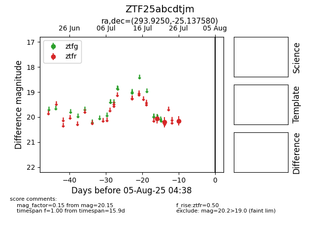

Target ZTF25abcdtjm at 2025-08-05 04:38, see:
FINK: fink-portal.org/ZTF25abcdtjm
Lasair: lasair-ztf.lsst.ac.uk/objects/ZTF25abcdtjm
ALeRCE: alerce.online/object/ZTF25abcdtjm
alt names
ZTF25abcdtjm (ztf,fink)
coordinates:
equatorial (ra, dec) = (293.9250,-25.13758)
galactic (l, b) = (14.3416,-20.38565)
photometry
last ztfr=20.15
3 ztfr detections
